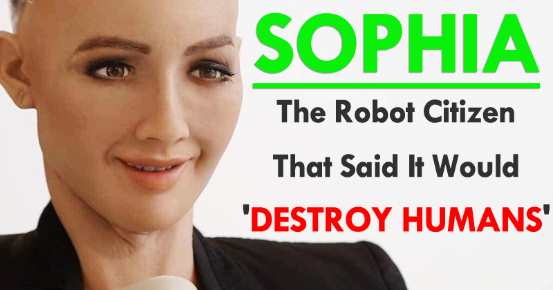

Sophia - the social robot

(Saudi Arabia Grants Citizenship To A Robot Named Sophia ...)
oder "die Zuuukunft... ist schon da!"
Sophia is Hanson Robotics’ latest and most advanced robot to date and a cultural icon. Activated on February 14, 2016, she has quickly become a media darling, appearing on major media outlets around the world, igniting the interest of people regardless of age, gender, and culture, even gracing the cover of one of the top fashion magazines. Sophia is a highly sought-after speaker in business and showed her prowess and great potential across many industries. She has met face-to-face with key decision makers in banking, insurance, auto manufacturing, property development, media, and entertainment. In addition, she has appeared onstage as a panel member and presenter in high-level conferences, covering how robotics and artificial intelligence will become a prevalent part of people’s lives. Her reputation extends beyond business into the global social arena. She was named the world’s first United Nation Innovation Champion by United Nations Development Program (UNDP) and will have an official role in working with UNDP to promote sustainable development and safeguard human rights and equality.
Hanson Robotics